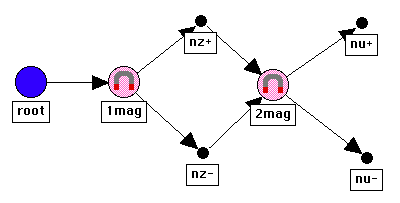

Drawing The Net
-
Double click on the Quantum Fog application icon.
-
Select the Custom Node icon in the Palette. Click once anywhere
on the Main Window.
-
Change the name of this new node to whatever you want.
-
Color the node as follows. In the Palette, and double-click the rectangle
(we'll call it a "color swatch") next to the paint brush icon. Choose a color
from the ensuing dialog. The color that you choose will appear in the swatch
of the Palette window. If now you select the Paint icon in
the Palette and then touch a Custom or Deterministic Node, the node
will take on the same color as that of the palette's swatch.
-
Create a second Custom Node on the Main Window. Select the Draw
Arrow icon in the Palette. Draw an arrow by dragging the bow and
arrow cursor from the first to the second node.
-
Select the Select icon in the Palette. Click on a node. It's
now selected. Click on it again. It's now unselected. Click on an arrow.
Click on it again.
-
Select a node. Select the Drag icon in the Palette. Place the
cursor over the selected node. Press the mouse button down, and, while holding
the button down, move the cursor.
-
Select a node. Press the DELETE key.
-
Create other nodes of types: Beam-Splitter, Deterministic Node,
Polarization Rotator, Polarizer, Qbit Rotator, Stern-Gerlach (S.G.) Magnet.
Draw more arrows. Continue to experiment with the Select and
Drag tools and with the DELETE key.
-
Choose Select All from the Edit menu. Press the DELETE key.
-
Copy the following diagram. Use the same node labels and node
types.
-
Use the Save As... item of the File menu to save your copy
of the above diagram. Call the new document
MyKindergartenNet.
-
Close the Palette. The cursor is now a "pointer"—a boldface arrow
pointing towards the top-left corner of the screen. Click on a node, and,
while holding the button down, move the cursor. Click somewhere on the Main
Window away from the nodes or arrows. You will find that this cursor
performs the 3 functions of select, drag and open that you have come to associate
with such a cursor, in drawing applications like MacDraw.
[Table Of Contents]